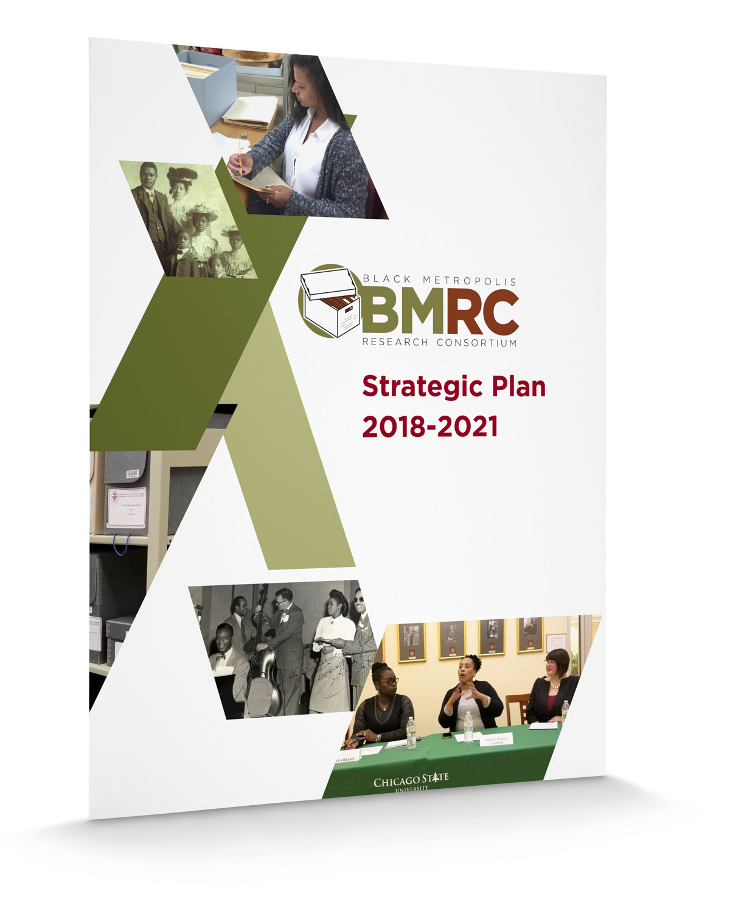
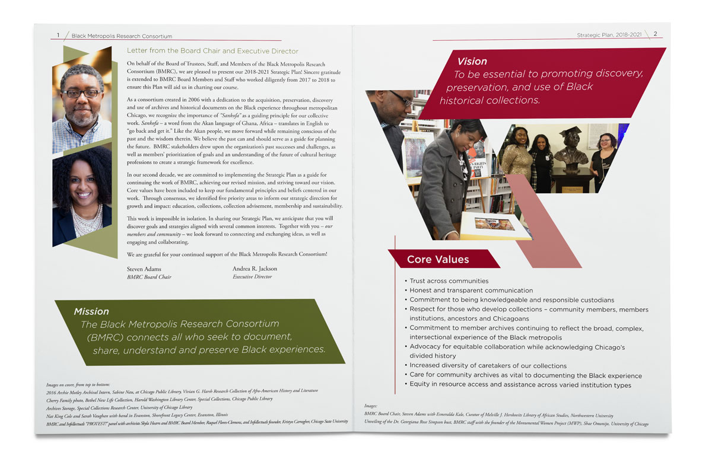

Publication Design
Black Metropolis Research Consortium Strategic Plan
Branding, promotion, and information organization.


Problem
The Black Metropolis Research Consortium (BMRC) didn't have a specific style or brand, but they wanted to create an inviting Strategic Plan. They needed a design that look engaging and dynamic with a layout that showcased their archival materials, member institutions, and wealth of events.
Solution
- Using tints of the colors from their logo, I created a warm and welcoming color palette
- Blocks of shapes and images segmented the dense amount of information into easily readable and digestible sections.
- Placing the images into geometric shapes lent a uniform look to images that were taken over a series of years at various BMRC events.
- This uniformity allowed for archival images to be integrated with contemporary images while created a link between the organization, their events, and their collections.
- The dynamic shapes imbued the message of action and forward momentum that the organization was capturing with their strategic plan.
Impact
- The design and layout was so well-received by the stakeholders and their community that the organization adopted this look for further printed material.
Roles
- Art Director
- Lead Designer